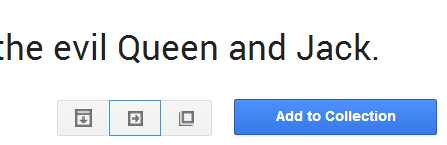
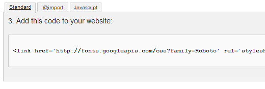
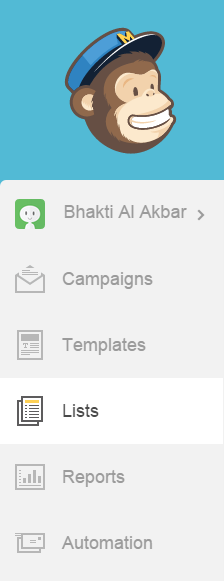
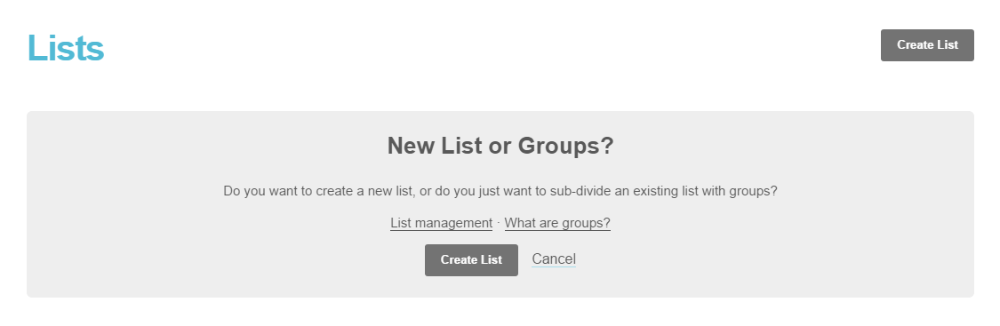
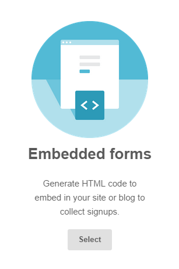
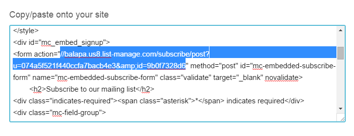
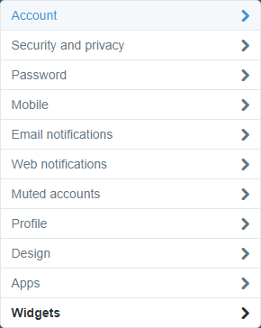
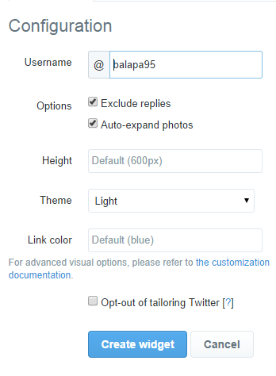
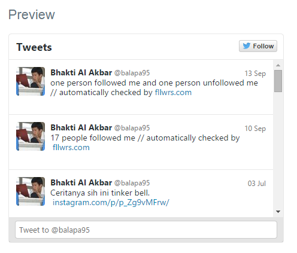
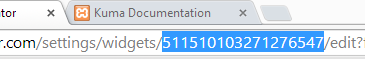

A) HTML Structure
This template is a responsive layout with 1 to 5 columns. All of the information within the main content area is nested within the id "main-container". To separate these columns, i use a framework called Bootstrap. You need to understand that 1 full column is counted as 12 columns. So, if you want to make a single column, you just need to put class "col-md-12" on your div tag. Look at example below.
<div class="row">
<div class="col-md-12">Your content goes here</div>
</div>
Let's say that you want to create two columns, so the mathematic will be "12 / 2 = 6". Yes, you need two columns with two "col-md-6" classes.
Using Google Font
The main font that i use on this template is from google fonts. Google font is an online font, to use this font, you just need to do this following code in your HTML file.
<link href='http://fonts.googleapis.com/css?family=Roboto:400,300'rel='stylesheet' type='text/css'>
You can change the font by going to Google fonts

Search your font, when you have found your font, just click the icon quick use (the blue outline).
After that, you'll be directed to a new page. Scroll down until you find HTML <link> tag like below.
Copy the whole code, and paste it on your HTML file within <head> tag. Next to use this font, go to style.css and write the CSS like example below.
h2 { font-family : 'Roboto'; }
Using The Icons
I use font awesome for this template. It's very simple to use the icon, you just need to put a class on it. First, you put the prefix class, then the icon name. Look at example below. If you would use font awesome icon, use the following code.
<span class="fa fa-facebook">
You can see whole classes in font-awesome.css.
B) CSS Files and Structure
Here are the included CSS files for this template.
-
Style.css
This file contains the bulk of styles, colors and information for the template styles. Start with this file for your color adjustments or adding additional style information. -
Bootstrap.css
Bootstrap is a framework, it provides a CSS reset to reset all of HTML tags to work exactly same to many browsers.
It also contains some general styling, such as anchor tag colors, font-sizes, etc. Keep in mind, that these values might be overridden somewhere else in the file. There's no need to edit this file. -
Color Folder : blue.css, etc
This file contains the color of all elements. Edit this file if you want to edit the color of all elements at once. -
Font-awesome.css
I have explain this before, once again this CSS file makes the font icons. There's no need to edit this file. -
Twitter.css
This file styling the appearance of twitter feeds. Start with this file if you want to change the font-size, text-align, etc of twitter feeds. -
Preloader.css
This file styling the appearance of preloader, there's no need to edit this file. -
Gmap.css
This file styling the appearance of google map design. Start with this file if you want to change the font-size, text-align, etc of google map. -
Carousel Folder : Owl.carousel.css & Owl.theme.css
This file styling the quotes carousel slider. Start with this file if you want to edit the with navigation, border-radius, etc. -
Animate.css
This file is collaborated with morpext.min.js to create text rotator animation effect.There's no need to edit this file.
If you would like to edit the color, font, or style of any elements in one of these columns, you would do the following:
h2 { color: #someColor; }
If you find that your new style is not overriding, it is most likely because of a specificity problem. Scroll down in your CSS file and make sure that there isn't a similar style that has more weight.
#portfolio h2 { color: #someColor; }
So, to ensure that your new styles are applied, make sure that they carry enough "weight" and that there isn't a style lower in the CSS file that is being applied after yours.
C) JavaScript
Here are the included JavaScript files for this template.
-
jQuery
jQuery is a Javascript library that greatly reduces the amount of code that you must write -
Prefixfree.min.js
Prefixfree is a jQuery plugin to add prefix for CSS properties. For example, you don't need to add prefix "-moz" to property "transform" on mozilla firefox, and so on to chrome, etc. -
Main.js
I put the basic setting for smoothscroll, carousel, morphext, ajax, etc in this file. Edit this file if you want to edit the basic setting. -
Blog-post.js, Portfolio-case.js
This is just additional javascript for blog-post.html and portfolio-case.html. There's no need to edit this file. -
SmoothScroll.js
This plugin makes your browser such as chrome and opera scroll smoothly. There's no need to edit this file. -
TwitterFetcher.min.js
twitterFetcher.min.js is a plugin to get twitter feeds from twitter users. There's no need to edit this file. -
Twitter.js
To change the user that will show up on your website, edit this file. Find var "config1", in the id, there're some number. You must change this, to your twitter id. To get the id, follow this step. -
Vendor Folder : FastClick.js, Morphext.min.js, etc
Every single javascript files in vendor folder are frameworks for template effect such as animation, form validation, image shuffeling, etc. There's no need to edit files in that folder.
D) PHP Code Explanation
Here are the included PHP files for this template.
Contact.php
Change the email you want to be the email receiver, go to contact.php, edit this following code:$emailTo = 'your@email.com';
There's no need to edit the other codes.
E) Working with Mailchimp
Making a subscribe list with mailchimp is kinda easy. Just follow this instruction.
-
First, you need to login to mailchimp. If you don't have account yet, please create one here
-
After, you login, click menu list just like the image below.
 -
After that, you need to create a new list. Click "create" in the right top.
 After that, just fill the information they had required.
-
After that, select the embeded form in the middle.
 Finally, scroll down until you find URL like this image below.
-
Copy the whole code, go to blog-post.html and paste it in there. Find tag form within <div id="subscribe">. Edit the action attribute, change the URL to your mailchimp URL you just copied.
-
After you paste your code to action attribute, change the "post?" into "post-json?". And the end of URL add this code "&c=?"
This is the final code that works.
action="http://balapa.us8.list-manage.com/subscribe/ post-json?u=074a5f521f440ccfa7bacb4e3&id=9b0f7328d6&c=?"
F) Working with Twitter.js : Getting User ID
All you need to change the user that will display on your website is a widget twitter. Follow this instruction to get the user ID.
First, of course login to twitter.
-
And then, go to your setting, select the widget menu.
 After that, create a new widget.
-
Enter your twitter username like example below.
And then, hit button create widget!
-
Now your preview widget will come up in the right side.
 -
After the preview comes up, your browser URL will change like example below.
Get the number after /widget/, copy that, go to twitter.js. Find var config1, in the id, paste your id number to that.
- After that, your last tweet will integrate to your website.
G) Sources and Credits
I've used the following images, icons or other files as listed.
- Images from Unsplash, DeviantArt, Dribbble.
- Font awesome
- jQuery
- jQuery Validate
- Bootstrap
- Masonry
- twitterFetcher.js
- Owl.carousel.js
- SmoothScroll.js
- Google Map design from Codyhouse
- Prefixfree.js
- Shuffle.js
- Typer.js
- Morphext.js
- Fastclick.js
Once again, thank you so much for purchasing this theme. As I said at the beginning, I'd be glad to help you if you have any questions relating to this theme. No guarantees, but I'll do my best to assist. If you have a more general question relating to the themes on ThemeForest, you might consider visiting the forums and asking your question in the "Item Discussion" section.
Bhakti Al Akbar A.K.A balapa
Back to Top